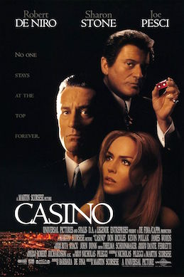

Casino is a film directed by Martin Scorsese. It is a masterpiece that was first released in 1995. It is an action packed film that keeps you on your toes and does not let you rest. Las Vegas is the main setting of the movie. It shows you the beauty and how it is a fun place that adults go to, to gamble, have drinks, and let loose. It also shows you the dark, horrific parts of Las Vegas. The scamming, the murdering, and all the evils of Las Vegas. The two main characters, Ace Rothstein and Nicky Santoro, are played by Robert De Niro and Joe Pesci.
The film begins with Ace Rothstein opening his car door, turning the key, and the car emitting into flames. It starts off with a literal bang. It makes you want to continue to watch it and see how that happened, or even why it happened.After that is all shown, it takes you back in time. Ace is narrating the film and wants you to understand the story.This is where you learn that he runs a casino. Nicky Santoro then begins to narrate. He explains how it went from being on top of the world, to losing it all. Nicky says “It turned out to be the last time that street guys like us were ever given anything that f***ing valuable again”. That is the beginning to you learning that they are tied to the mob.
The movie has many twists and turns throughout the movie. Ace meets a woman named Ginger McKenna. She lurks around the casino and is the biggest hustler around. Ace and Ginger lay eyes on each other and had a connection. They meet in the casino and end up becoming married months later. Ace puts all his trust into a woman that he knows was slimy and is a scammer. In the end, their love was not true and many fights occurred. She became a drug addict and an alcoholic. She ended up stealing millions from Ace also. In between all of the relationship drama, there are many other problems that occur. While the casino is doing great, Nicky is creating headlines with his violent behavior behind the scenes. All of the behind the scenes distractions eventually lead to the federal government shutting it all down. Nicky ends up beaten to death with a baseball bat. At the end of the movie, it shows the same scene that was shown in the beginning. Ace’s car was blown up by dynamite put under his car. Luckily, he lives and leaves Las Vegas.
The movie was a great film to me. It was my first time watching it, and it was very enjoyable. The acting was incredible. Robert De Niro and Joe Pesci really play it off as mobsters. The film gave me an urge to go to Las Vegas and have some fun. The directing and mise en scene was great. The film was a hair under three hours long but it did not feel like it. The film flew by because of the non-stop attention getters and action packed scenes. This is a film I would definitely recommend to others and something that I will be watching again. It was my first film that included the mob in it. It makes me want to find others with similar plots.